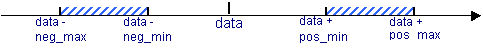

gen_delta allows users to change
the value of a multibit signal within a pre-defined values range. The delta,
which defines the change of the input value, is calculated every time an input
data signal changes its value. Four parameters (neg_min, neg_max, pos_min,
pos_pax) constrain the randomization of delta. The following figure illustrates
the randomization constraints:

gen_delay #(min_clocks,
max_clocks, bit_width) DelayInst (clk, rst_n, data_in, data_out);
Parameters
|
|
Neg_Min_Delta
|
Minimum limit of negative value change |
Neg_Max_Delta
|
Maximum limit of negative value change |
Pos_Min_Delta
|
Minimum limit of positive value change |
Pos_Max_Delta
|
Maximum limit of positive value change |
bit_width
|
Data bit width. Default: 1 |
Interface
|
|
Clk
|
Sampling clock for data |
rst_n
|
Active-low reset |
data_in
|
Input data signal.
Bit width of this signal is defined with a “bit_width” parameter. |
data_out
|
Output data signal. Bit width of this signal is
defined with a “bit_width” parameter. |
Verilog example
The
current example shows how an 8-bit data_in signal is delayed by the random
number of clock cycles [from 3 up to 6]
module test;
reg clk;
reg [7:0] data_in;
wire [7:0] data_out;
integer i;
always #15 clk <= ~clk;
gen_delay #(3,6,8) delay
(clk, 1'b1, data_in, data_out);
initial begin
$dumpvars;
clk = 1;
data_in = 0;
for (i=0; i<200; i=i+1) begin
@(posedge clk);
if (i%10 == 0) data_in = i;
else data_in = 0;
end
#100 $finish;
end
endmodule